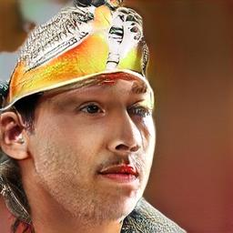
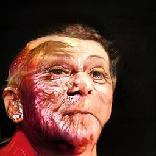
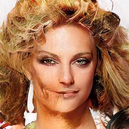

Synthetic Countenance
Everything is fake
GANs
generative adversarial networks
One really cool trick to generate synthetic samples.
Celebrity dataset
CelebA
Crazy good results!
Heads up, nobody here is real!
even the failures are interesting!



Sample faces "nearby"
use optimal transport!
math math math math math math math math
Normal generator (z gives an image)
What I wanted (get z from any image)
What I did (get z from a single image)
Ali Spittel
Formerly GA, now at Dev.to
used with permission
Christina Farr
Reporter at @CNBC.com
used with permission
Luis Fonsi
That guy from
Despacito
Public image
Rihanna
9-time Grammy winner
and Barbadian Ambassador at-Large
Public image
y tho?
Models are a reflection of data.
Explore the space to explore ourselves.
Black mirror vs White mirror.